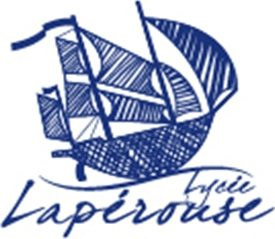
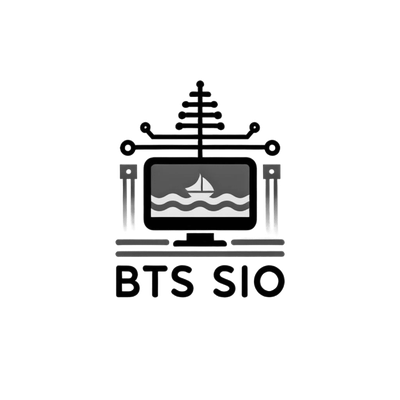

Le fil rouge de mon parcours depuis le baccalauréat : deux années de BTS SIO,
un stage, une année d’alternance en parallèle de ma formation, puis ma
prochaine étape professionnelle. Faites défiler la page pour suivre la route.
Spécialités Mathématiques et Numérique et Sciences Informatiques (NSI).
MentionBien
SpécialitésMaths · NSI
À côté
Préparation Militaire Marine (janvier – février 2024),
base navale de la Pointe Chaleix : obtention du permis côtier et du
CRR (Certificat Restreint de Radiotéléphoniste).

// étape 01Le bacPoint de départ
2025
// étape 02BTS SIO 1Formation

Formation2025
1re année de BTS SIO
Lycée Dick Ukeiwë · Dumbéa
Services Informatiques aux Organisations, option SISR
(Solutions d’Infrastructure, Systèmes et Réseaux).
Intégration au sein de la Direction des Systèmes d’Information de la SGNC.
Compréhension de l’organisation interne et des enjeux du secteur bancaire.
Sensibilisation aux contraintes de sécurité et de conformité (RGPD,
lutte contre la corruption, protection des données).
2. Prise en main des outils techniques
Docker : principes de la conteneurisation, ateliers de
conteneurisation, mise à jour et partage d’applications.
Grafana et Prometheus : visualisation, supervision temps réel,
configuration des alertes via Grafana Alerting.
Kubernetes : découverte des Pods et de leur rôle dans la
gestion des microservices.
3. Projet réalisé : mise en place d’alertes de supervision
Identification des microservices et de leurs Pods dans les namespaces de
développement.
Configuration de seuils d’alerte à 80 % d’utilisation CPU et mémoire.
Création de politiques de notification, avec regroupement des alertes par
namespace afin de limiter le bruit.
Optimisation : sélection de métriques précises pour éviter les faux
positifs, personnalisation des messages de notification.
4. Compétences développées
Techniques : supervision avec Grafana et Prometheus, gestion de
conteneurs Docker, résolution de problèmes de configuration d’alertes.
Professionnelles : autonomie dans la recherche de solutions,
adaptation aux contraintes de sécurité et aux outils autorisés, rigueur
dans la gestion des missions.
Mission 1 — Supervision des environnements de production
Optimiser la surveillance des performances et de la disponibilité des
environnements critiques.
Déploiement de sondes de supervision CPU et mémoire sur les environnements
de production.
Mise en place d’alertes applicatives dans les logs pour détecter et
signaler les erreurs en temps réel.
Étude du remplacement des alertes par e-mail par des alertes SMS afin
d’accélérer la réaction des équipes.
Supervision des connexions critiques entre les API et les bases de données,
pour garantir la continuité des services.
Mission 2 — Sécurité des SI : gestion de l’obsolescence
Réduire les risques liés à l’utilisation de modules obsolètes.
Formalisation d’une méthodologie pour identifier et suivre
l’obsolescence des modules utilisés.
Identification et proposition d’outils pour automatiser la détection des
composants obsolètes.
Mission 3 — Conformité NIST et automatisation
Contribuer aux objectifs annuels de conformité NIST et de gestion des
vulnérabilités par l’automatisation.
Prise en charge de six mesures de contrôle du référentiel, évaluées
selon des échelles de conception, d’efficacité et de périmètre,
avec constitution des preuves associées.
Collaboration avec le manager Infrastructure et les officiers de sécurité
pour identifier les tâches automatisables.
Automatisation de contrôles récurrents (PowerShell / Active Directory).
Compétences mobilisées
Supervision système, déploiement d’outils de monitoring, analyse des
logs, gestion des alertes.
Gestion des risques, analyse de la chaîne de dépendances, automatisation
des processus, veille technologique.
Gestion de projet, conformité au référentiel NIST, analyse des
vulnérabilités, collaboration transverse.
À compléter : ajoute ici le rapport
d’alternance que tu as rédigé (version anonymisée), avec un
bouton de téléchargement comme pour le rapport de stage. Dépose le PDF dans
assets/docs/.